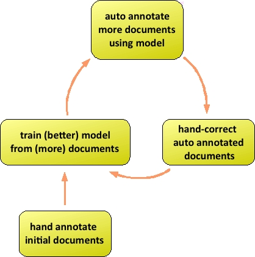

The MITRE Annotation Toolkit (MAT) is a suite of tools which can be used for automated and human tagging of annotations.
If you don't know what annotation is, here's a quick and dirty definition: annotation is a process, used mostly by researchers in natural language processing, of enhancing documents with information about the various phrase types the documents contain. So if the document contains the sentence "John F. Kennedy visited Guam", the document would be enhanced with the information that "John F. Kennedy" is a person, and "Guam" is a location. The MAT toolkit provides support for defining the types of information that should be added, and for adding that information manually or automatically.
MAT supports both UI interaction and command-line interaction,
and provides various levels of control over the overall annotation
process. It can be customized for specific tasks (e.g., named
entity identification, de-identification of medical records). The
goal of MAT is not to help you configure your training engine (in
the default case, the Carafe CRF system) to achieve the best
possible performance on your data. MAT is for "everything else":
all the tools you end up wishing you had.
MAT contains:
The primary task for which MAT was built is the tag-a-little,
learn-a-little (TALLAL) loop, which we'll describe in a minute,
but because the MAT components are loosely coupled, you can do a
whole range of things with MAT, like
Some of these things require a little work on your part, but
MAT's value added is considerable.
MAT's design targets the tag-a-little,
learn-a-little (TALLAL) loop, illustrated here:

The TALLAL loop is used for jointly creating corpora of
correctly-annotated documents, side by side with a model for
automatically adding these annotations to documents. In the
default case, the user begins by hand-annotating a group of
documents, and using the trainer to create a model for automatic
tagging. The user then uses the model to create automatically
annotated documents, which can then be hand-corrected and added to
the corpus of documents available as inputs to model creation. In
this way, the user expands the corpus, while creating a
better-fitting model, and reducing effort on each iteration as the
model improves. At various points, the user can also use the
correctly-annotated corpus to assess the accuracy of the model,
using the experiment engine.